Generated by python -m eval.judge sheet. Pass threshold 0.30. Click an image to enlarge.
To label: mark parts pass/fail, then copy the JSON into eval/judge_labels.json.
gemini-3.5-flash-lite / any library / norag (39)
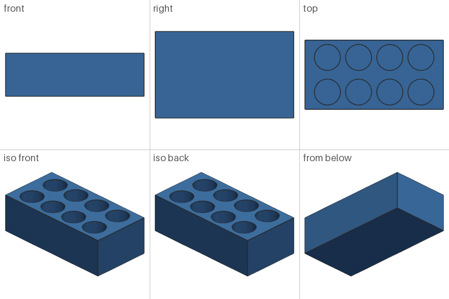
gemini-3.5-flash-lite/lib26-cdabac/norag/c01/rep0
Can you make me something to stand my AA batteries up in? 8 of them in two rows of four, holes 15mm wide and 20mm deep, in an 80 x 40 x 25 block.
bench: built, bbox ok
llm:gemini-3.1-flash-lite v1: 0.56 pass
The model is hollowed out from below, meaning the battery holes do not have a base/floor; they are open-bottomed tubes.
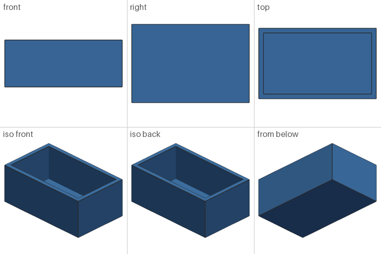
gemini-3.5-flash-lite/lib26-cdabac/norag/c02/rep0
I need a little open tray to keep SD cards in. It has to fit a 50 x 30 x 20mm spot on my shelf, thin walls are fine.
bench: built, bbox ok
llm:gemini-3.1-flash-lite v1: 1.00 pass
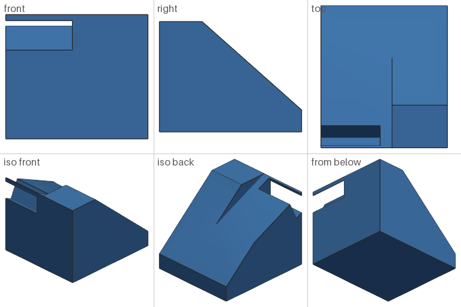
gemini-3.5-flash-lite/lib26-cdabac/norag/c03/rep0
something to prop my 70mm wide phone up at an angle on my desk
bench: built, bbox ok
llm:gemini-3.1-flash-lite v1: 0.22 FAIL
the slot on the front is incomplete, consisting only of a thin floating protrusion and an undersized notch that will not support a phone
the geometry on the top/front is disjointed and non-functional for holding a device securely
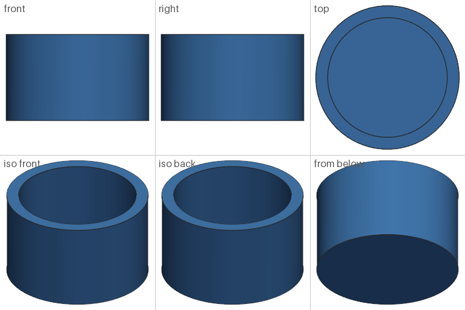
gemini-3.5-flash-lite/lib26-cdabac/norag/c04/rep0
My table leg is a 25mm round tube and it scratches the floor. Make a cap that slides 15mm onto the end, with a 3mm thick bottom.
bench: built, bbox ok
llm:gemini-3.1-flash-lite v1: 0.33 pass
The requested 3mm thick bottom is missing; the part is open at both ends (a sleeve/coupling rather than a cap)
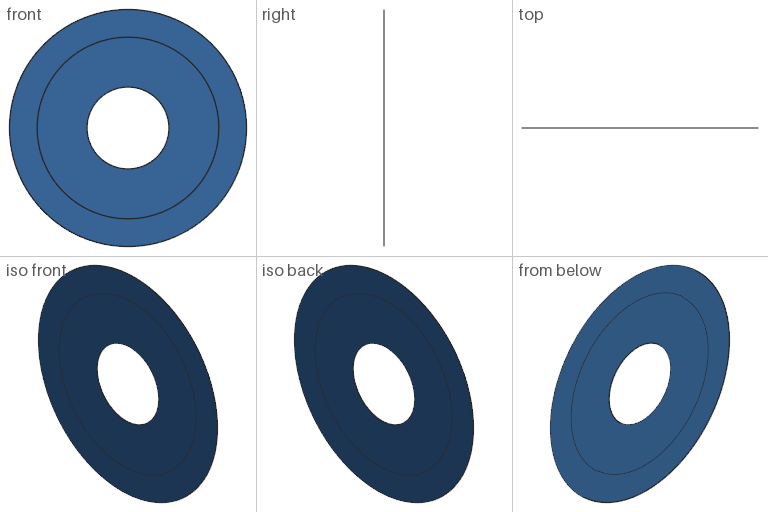
gemini-3.5-flash-lite/lib26-cdabac/norag/h04/rep0
A pulley wheel 40mm in diameter and 12mm wide with an 8mm bore and a V-groove around its rim, 6mm wide at the surface and 4mm deep.
bench: best_effort, bbox wrong
llm:gemini-3.1-flash-lite v1: 0.11 FAIL
the part is missing the requested V-groove entirely, it is a flat disk
the part is essentially 2D with zero thickness shown in the right and top views
the diameter is slightly off the requested 40mm at 41.76mm
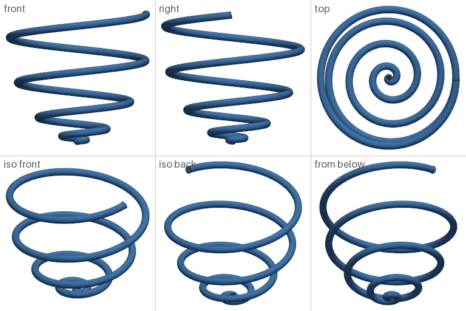
gemini-3.5-flash-lite/lib26-cdabac/norag/h05/rep0
A coil spring made from 2mm diameter round wire: 20mm outer diameter, 5 turns at a 6mm pitch.
bench: best_effort, bbox wrong
llm:gemini-3.1-flash-lite v1: 0.11 FAIL
The part is a spiral (conical) spring, not a cylindrical coil spring.
The outer dimensions (approx 37mm) do not match the requested 20mm outer diameter.
The shape is not a constant diameter helix.
gemini-3.5-flash-lite/lib26-cdabac/norag/h06/rep0
A desk cable grommet: a 60mm diameter, 3mm thick round flange on top of a 50mm outer diameter, 20mm long tube with 2mm walls, open through the middle, with a 15mm wide slot cut through the flange and tube from one side to the centre so a cable can be slipped in.
bench: built, bbox ok
llm:gemini-3.1-flash-lite v1: 0.44 pass
The slot goes all the way to the center opening, essentially creating a C-shape rather than a cable grommet with a hole in the middle as requested.
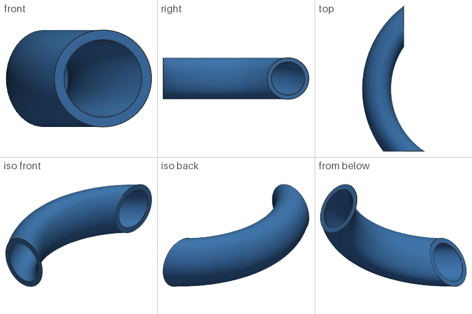
gemini-3.5-flash-lite/lib26-cdabac/norag/h07/rep0
A 90 degree pipe elbow: a tube with 20mm outer and 16mm inner diameter, bent through 90 degrees around a 30mm centreline radius, with no straight ends.
bench: best_effort, bbox wrong
llm:gemini-3.1-flash-lite v1: 0.44 pass
The part is not a 90 degree bend; it appears to be a smaller angle bend (approximately 60-70 degrees based on visual inspection).
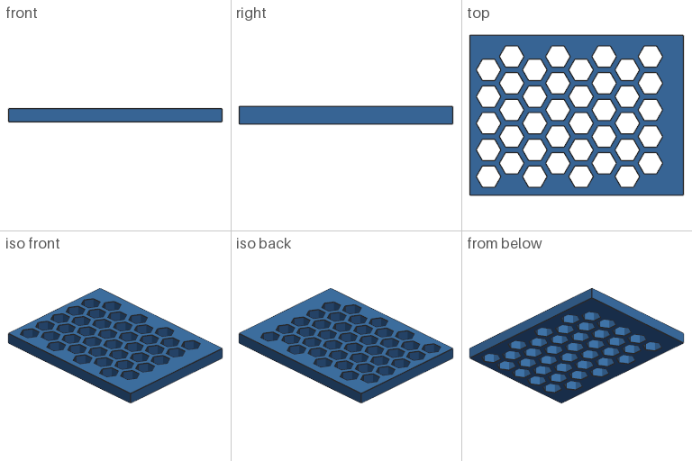
gemini-3.5-flash-lite/lib26-cdabac/norag/h08/rep0
An 80mm x 60mm x 5mm honeycomb panel: a grid of hexagonal through-holes 8mm across the flats with 2mm walls between them, leaving a solid border at least 3mm wide around the edge.
bench: built, bbox ok
llm:gemini-3.1-flash-lite v1: 0.44 pass
the holes are not through-holes; they are pockets that stop before the bottom surface, as evidenced by the 'from below' view showing a solid base instead of an open grid.
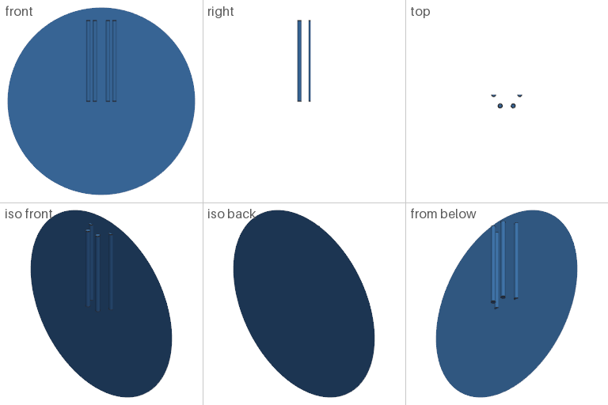
gemini-3.5-flash-lite/lib26-cdabac/norag/h09/rep0
A tool handle 25mm in diameter and 90mm long overall, with a fully rounded hemispherical back end and six 4mm diameter half-round flutes running along the straight part, evenly spaced around it.
bench: best_effort, bbox wrong
llm:gemini-3.1-flash-lite v1: 0.00 FAIL
The object is a flat disc with protruding rods rather than a tool handle.
Missing the 90mm length and 25mm diameter cylindrical body.
Missing the hemispherical back end.
The flutes are missing; instead, four rods protrude from the surface.
Overall dimensions provided (179mm x 12mm x 180mm) do not match the requested 90mm x 25mm cylinder.
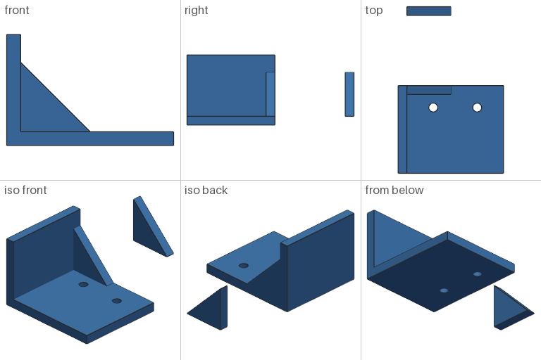
gemini-3.5-flash-lite/lib26-cdabac/norag/h10/rep0
An L-bracket 50mm wide with a 60mm long horizontal leg and a 40mm tall vertical leg, both 5mm thick, braced by two 5mm thick triangular gussets flush with the side edges, with two 5mm holes in each leg.
bench: best_effort, bbox wrong
llm:gemini-3.1-flash-lite v1: 0.33 pass
Missing one gusset (only one present)
Gusset is not attached to the bracket
Missing two 5mm holes in the vertical leg
gemini-3.5-flash-lite/lib26-cdabac/norag/h11/rep0
A tapered square planter 70mm tall, 60mm square at the bottom and 80mm square at the top, with 3mm walls and base, open at the top, and a 10mm drainage hole in the centre of the base.
bench: built, bbox ok
llm:gemini-3.1-flash-lite v1: 1.00 pass
None
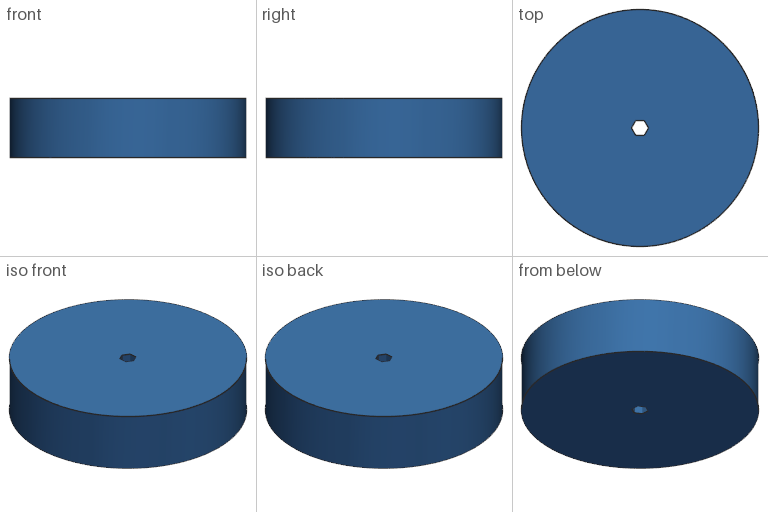
gemini-3.5-flash-lite/lib26-cdabac/norag/h12/rep0
A thumbwheel 40mm in diameter and 10mm thick with 30 semicircular 2mm diameter notches evenly spaced around its rim and a hexagonal socket 5mm across the flats through the centre.
bench: built, bbox ok
llm:gemini-3.1-flash-lite v1: 0.22 FAIL
30 semicircular notches around the rim are completely missing
gemini-3.5-flash-lite/lib26-cdabac/norag/h13/rep0
An open-top box 60mm x 40mm x 30mm with 2mm walls and floor, with a 1.5mm tall, 1mm deep groove cut into the inside of both long walls, 3mm below the top edge, for a sliding lid.
bench: built, bbox ok
llm:gemini-3.1-flash-lite v1: 0.56 pass
The grooves are continuous on the inside faces of the short walls, which would prevent a lid from sliding in from the end. For a sliding lid to function, the grooves must be open at one end of the box.
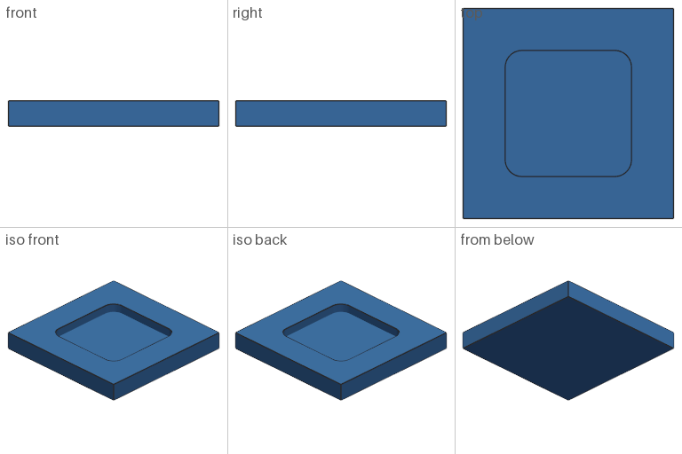
gemini-3.5-flash-lite/lib26-cdabac/norag/m09/rep0
A 50mm x 50mm x 6mm plate with a 30mm square pocket, 3mm deep, centred in the top face; the pocket's four inside corners are rounded with a 4mm radius.
bench: built, bbox ok
llm:gemini-3.1-flash-lite v1: 0.33 pass
The depth of the pocket is incorrect; the bottom view clearly shows the pocket has cut all the way through the 6mm plate, rather than being 3mm deep.
gemini-3.5-flash-lite/lib26-cdabac/norag/m11/rep0
A 25mm wide, 40mm tall, 3mm thick hanging plate with a keyhole cut through it: an 8mm diameter hole centred 12mm above the bottom edge, with a 4mm wide slot running 10mm straight up from the hole's centre.
bench: built, bbox ok
llm:gemini-3.1-flash-lite v1: 0.78 pass
The slot extends downward from the hole towards the bottom edge of the plate, whereas the request specified the slot should run upward from the hole's centre.
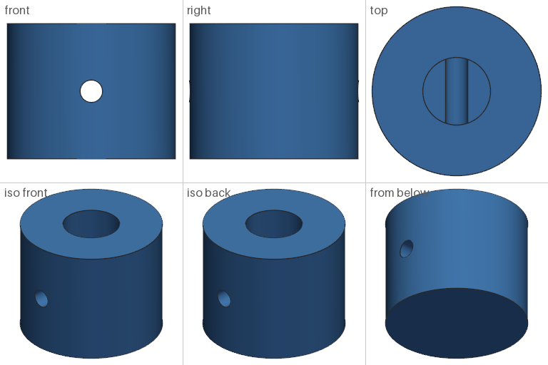
gemini-3.5-flash-lite/lib26-cdabac/norag/m12/rep0
A shaft collar: 25mm outer diameter, 10mm bore, 10mm long, with a 3.3mm radial hole drilled from the outside into the bore, centred along its length.
bench: best_effort, bbox wrong
llm:gemini-3.1-flash-lite v1: 0.44 pass
length is 20mm instead of the requested 10mm
top view indicates a slot or internal feature not requested
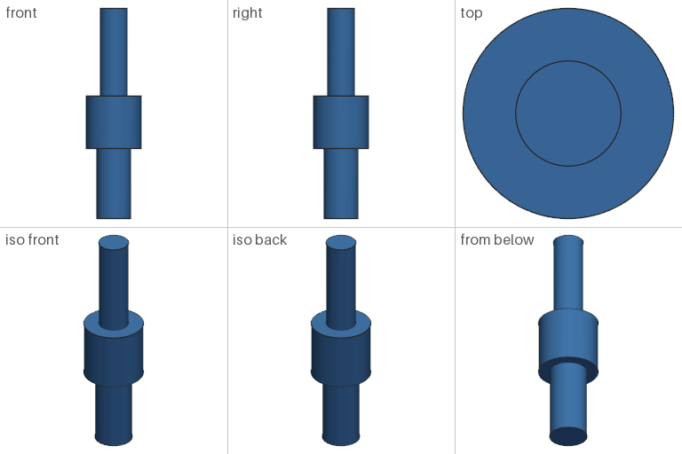
gemini-3.5-flash-lite/lib26-cdabac/norag/m13/rep0
A stepped shaft on one axis: 10mm diameter for the first 20mm, then 16mm diameter for 15mm, then 8mm diameter for the last 25mm.
bench: built, bbox ok
llm:gemini-3.1-flash-lite v1: 0.33 pass
The model is a symmetric shaft with a thick center and two thinner ends, whereas the request asked for a sequence of 10mm, then 16mm, then 8mm. The middle section is the thickest, but the outer sections appear identical in diameter and length rather than 10mm/20mm and 8mm/25mm.
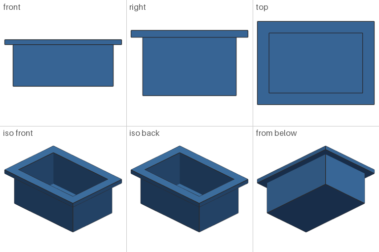
gemini-3.5-flash-lite/lib26-cdabac/norag/m14/rep0
An open-top box 60mm x 40mm x 25mm with 2mm walls and floor, with a 3mm thick flange sticking out 5mm all around the outside of the top rim, flush with the top.
bench: built, bbox wrong
llm:gemini-3.1-flash-lite v1: 0.89 pass
the height of the part is 28mm, whereas the request was 25mm + 3mm flange = 28mm total height (this is technically correct, but the request implied a 25mm box height plus a flange; the part appears to have the flange sitting on top of the 25mm box walls rather than being flush with the top edge as requested)
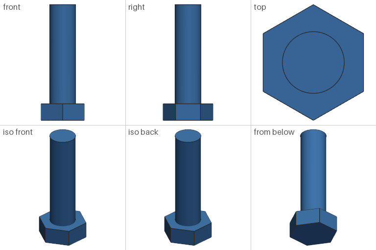
gemini-3.5-flash-lite/lib26-cdabac/norag/m15/rep0
A bolt blank: a hexagonal head 13mm across the flats and 5mm tall, with a plain 8mm diameter shank 30mm long (no thread).
bench: built, bbox ok
llm:gemini-3.1-flash-lite v1: 0.67 pass
The overall length is 35mm, which matches the sum of the head (5mm) and shank (30mm), but the height of the head and the length of the shank appear to have different proportions in the model compared to the request (the shank appears to be 30mm, but the head height is significantly larger than 5mm to achieve a 35mm total length).
gemini-3.5-flash-lite/lib26-cdabac/norag/m16/rep0
A five-pointed star 6mm thick: the points lie on a 30mm radius circle and the inner corners on a 12mm radius circle.
bench: best_effort, bbox wrong
llm:gemini-3.1-flash-lite v1: 0.89 pass
The overall diameter is approximately 57mm, which corresponds to a 28.5mm radius for the points rather than the requested 30mm.
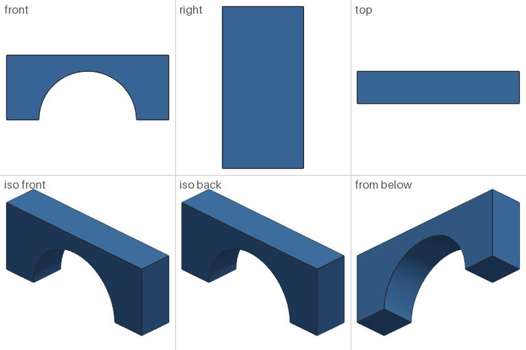
gemini-3.5-flash-lite/lib26-cdabac/norag/m17/rep0
A 100mm long, 20mm deep, 40mm tall block with a 60mm diameter semicircular arch cut through it from front to back, centred on the bottom edge.
bench: built, bbox ok
llm:gemini-3.1-flash-lite v1: 1.00 pass
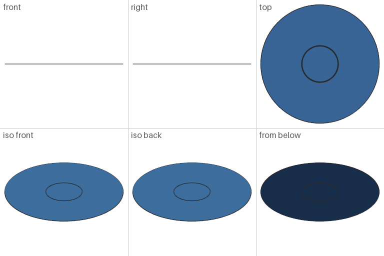
gemini-3.5-flash-lite/lib26-cdabac/norag/p06/rep0
A chess rook 40mm tall and 25mm across at its widest point (the base), with a castle top that has four notches cut into its rim.
bench: best_effort, bbox wrong
llm:gemini-3.1-flash-lite v1: 0.00 FAIL
The object is a flat disc, not a chess rook.
The object lacks all requested features (no height, no castle top, no notches).
The overall dimensions do not match the request.
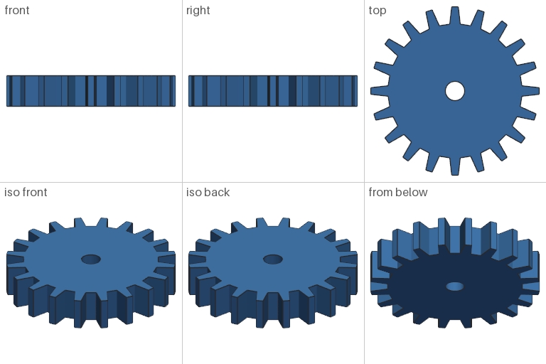
gemini-3.5-flash-lite/lib9/norag/h01/rep0
A spur gear with 20 teeth, module 2, 8mm thick, with a 5mm centre bore.
bench: built, bbox ok
llm:gemini-3.1-flash-lite v1: 0.56 pass
the gear model contains 19 teeth, not the requested 20
gemini-3.5-flash-lite/lib9/norag/h02/rep0
A phone stand: a 70mm wide, 80mm deep, 5mm thick base plate; a 5mm thick, 90mm long back support leaning back at 65 degrees from the base; and a 10mm tall lip along the front edge to stop the phone sliding.
bench: best_effort, bbox wrong
llm:gemini-3.1-flash-lite v1: 0.67 pass
The design includes two side walls (fins) extending from the base to the back support which were not requested.
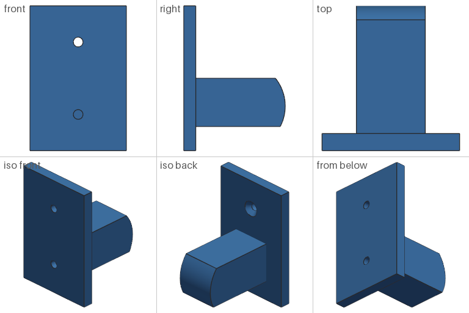
gemini-3.5-flash-lite/lib9/norag/h03/rep0
A wall hook: a 40mm x 60mm x 5mm back plate with two 4mm countersunk screw holes, and a curved hook arm that sticks out 35mm from the lower part of the plate and curves upward at the end.
bench: built, bbox ok
llm:gemini-3.1-flash-lite v1: 0.44 pass
the hook arm does not curve upward at the end
the hook arm is straight and blunt
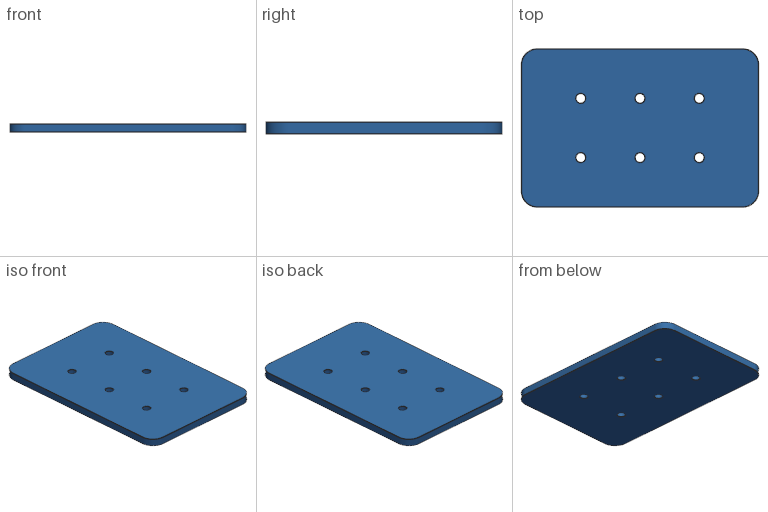
gemini-3.5-flash-lite/lib9/norag/m01/rep0
A 120mm x 80mm x 4mm mounting plate with a 3 by 2 grid of 5mm holes spaced 30mm apart, centred on the plate, and all four corners rounded with an 8mm radius.
bench: built, bbox ok
llm:gemini-3.1-flash-lite v1: 0.78 pass
The hole layout (3x2) is correctly oriented, but the spacing appears to be significantly wider than the requested 30mm based on the visual proportions relative to the plate size.
gemini-3.5-flash-lite/lib9/norag/m02/rep0
An open-top rectangular tray 100mm x 60mm x 15mm with 2mm walls and a 2mm floor, with one 2mm divider wall splitting it into two equal compartments along its length.
bench: built, bbox ok
llm:gemini-3.1-flash-lite v1: 1.00 pass
gemini-3.5-flash-lite/lib9/norag/m03/rep0
A round knob 30mm in diameter and 15mm tall, with a 6mm D-shaped shaft hole 10mm deep in the bottom; the flat of the D is 1mm in from the circle.
bench: built, bbox ok
llm:gemini-3.1-flash-lite v1: 0.56 pass
the D-shaped hole is on the top face in the image, whereas the request specifies it must be in the bottom
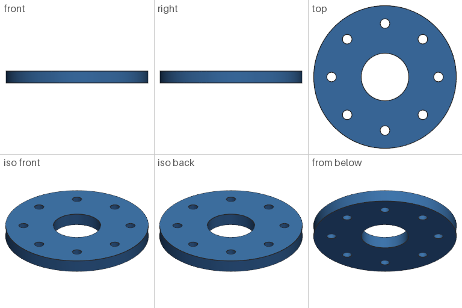
gemini-3.5-flash-lite/lib9/norag/m04/rep0
A 60mm diameter disc, 5mm thick, with a 20mm centre hole and eight 4mm holes evenly spaced on a 45mm bolt circle.
bench: built, bbox ok
llm:gemini-3.1-flash-lite v1: 1.00 pass
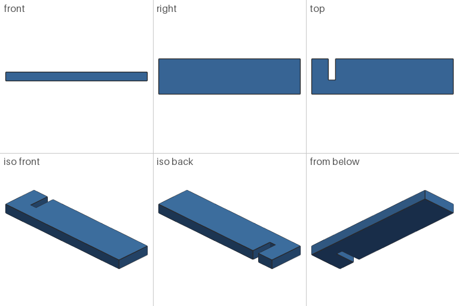
gemini-3.5-flash-lite/lib9/norag/m05/rep0
A cable comb: an 80mm x 20mm x 5mm bar with six 4mm wide, 12mm deep slots cut into one long edge, evenly spaced along it.
bench: built, bbox ok
llm:gemini-3.1-flash-lite v1: 0.33 pass
only one slot present instead of the requested six
gemini-3.5-flash-lite/lib9/norag/m06/rep0
A U-channel 100mm long, 30mm wide and 20mm tall, with 3mm thick walls and base, open at the top and both ends.
bench: built, bbox ok
llm:gemini-3.1-flash-lite v1: 1.00 pass
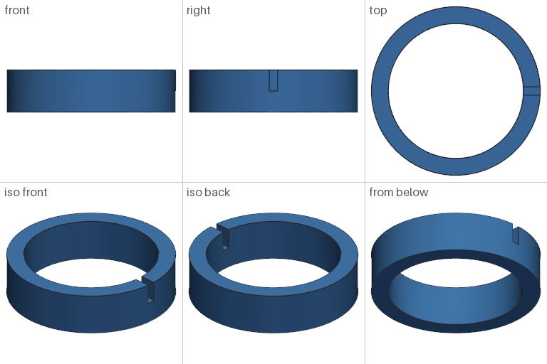
gemini-3.5-flash-lite/lib9/norag/m08/rep0
A pipe clamp ring: 10mm tall, 32mm inner diameter, 4mm wall, with a 2mm wide gap cut through one side of the ring.
bench: built, bbox ok
llm:gemini-3.1-flash-lite v1: 0.44 pass
The gap is only a partial-depth slot cut into the outer wall, rather than a gap cut completely through the ring as requested.
gemini-3.5-flash-lite/lib9/norag/p01/rep0
Make me a ruler with my name engraved on it. The ruler is 150mm long, 25mm wide and 3mm thick, with the name ALEX engraved 0.5mm deep and a tick mark every 10mm along one long edge.
bench: built, bbox ok
llm:gemini-3.1-flash-lite v1: 0.78 pass
The tick marks are not positioned at 10mm intervals; there are 14 intervals visible across 150mm length, which corresponds to approximately 10.7mm spacing instead of 10mm.
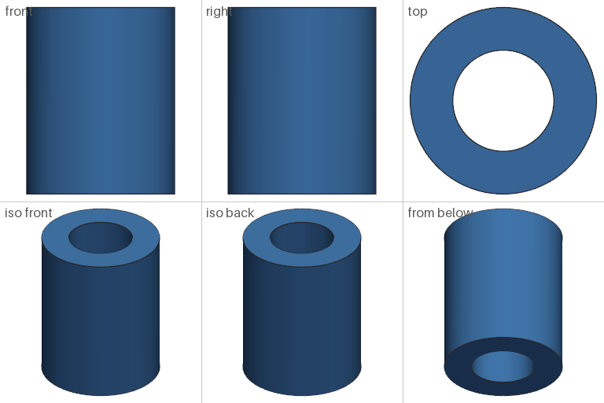
gemini-3.5-flash-lite/lib9/norag/s01/rep0
A cylindrical spacer with 12mm outer diameter, 6.5mm inner diameter, 15mm long.
bench: built, bbox ok
llm:gemini-3.1-flash-lite v1: 1.00 pass
inner diameter is visually consistent with the request but cannot be verified to the exact 6.5mm measurement
gemini-3.5-flash-lite/lib9/norag/s02/rep0
A 25mm cube with a 10mm diameter hole drilled through the centre from top to bottom.
bench: built, bbox ok
llm:gemini-3.1-flash-lite v1: 1.00 pass
gemini-3.5-flash-lite/lib9/norag/s03/rep0
A hexagonal prism 30mm across the flats and 8mm tall.
bench: built, bbox ok
llm:gemini-3.1-flash-lite v1: 1.00 pass
gemini-3.5-flash-lite/lib9/norag/s04/rep0
A 70mm x 20mm x 4mm bar with a 40mm long, 6mm wide slot through it, centred along its length.
bench: built, bbox ok
llm:gemini-3.1-flash-lite v1: 1.00 pass
gemini-3.5-flash-lite/lib9/norag/s05/rep0
A solid cone 40mm in base diameter and 30mm tall.
bench: built, bbox ok
llm:gemini-3.1-flash-lite v1: 1.00 pass
gemini-3.5-flash-lite / lib26-cdabac / rag (39)
gemini-3.5-flash-lite/lib26-cdabac/rag/c01/rep0
Can you make me something to stand my AA batteries up in? 8 of them in two rows of four, holes 15mm wide and 20mm deep, in an 80 x 40 x 25 block.
bench: built, bbox ok
llm:gemini-3.1-flash-lite v1: 0.22 FAIL
the holes are arranged in a single row of four, not two rows of four
the holes are interlocked/overlapping rather than being eight distinct holes for AA batteries
gemini-3.5-flash-lite/lib26-cdabac/rag/c02/rep0
I need a little open tray to keep SD cards in. It has to fit a 50 x 30 x 20mm spot on my shelf, thin walls are fine.
bench: built, bbox ok
llm:gemini-3.1-flash-lite v1: 1.00 pass
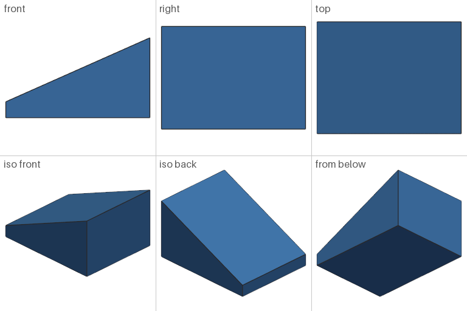
gemini-3.5-flash-lite/lib26-cdabac/rag/c03/rep0
something to prop my 70mm wide phone up at an angle on my desk
bench: built, bbox ok
llm:gemini-3.1-flash-lite v1: 0.22 FAIL
missing a slot, lip, or cradle to hold the phone in place; as shown, the phone would slide off the flat angled surface
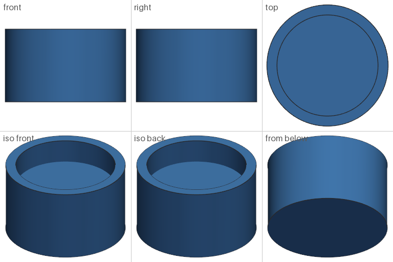
gemini-3.5-flash-lite/lib26-cdabac/rag/c04/rep0
My table leg is a 25mm round tube and it scratches the floor. Make a cap that slides 15mm onto the end, with a 3mm thick bottom.
bench: built, bbox ok
llm:gemini-3.1-flash-lite v1: 1.00 pass
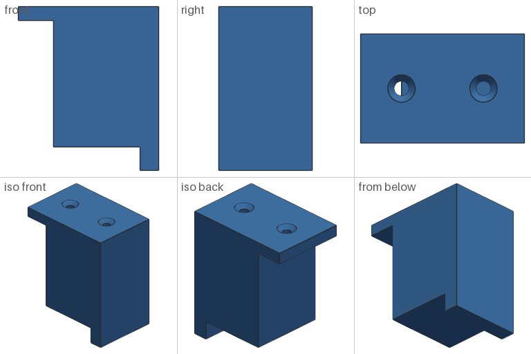
gemini-3.5-flash-lite/lib26-cdabac/rag/c05/rep0
a hook that screws to the underside of my desk so I can hang my headphones on it
bench: built, bbox ok
llm:gemini-3.1-flash-lite v1: 0.22 FAIL
the part is a solid block/bracket, not a hook; it lacks a curved or protruding section to hold headphones
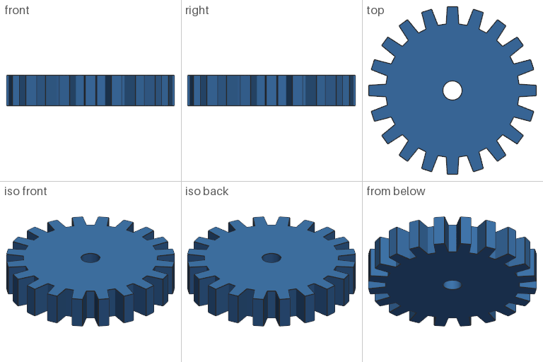
gemini-3.5-flash-lite/lib26-cdabac/rag/h01/rep0
A spur gear with 20 teeth, module 2, 8mm thick, with a 5mm centre bore.
bench: built, bbox ok
llm:gemini-3.1-flash-lite v1: 0.56 pass
The gear has 22 teeth instead of the requested 20
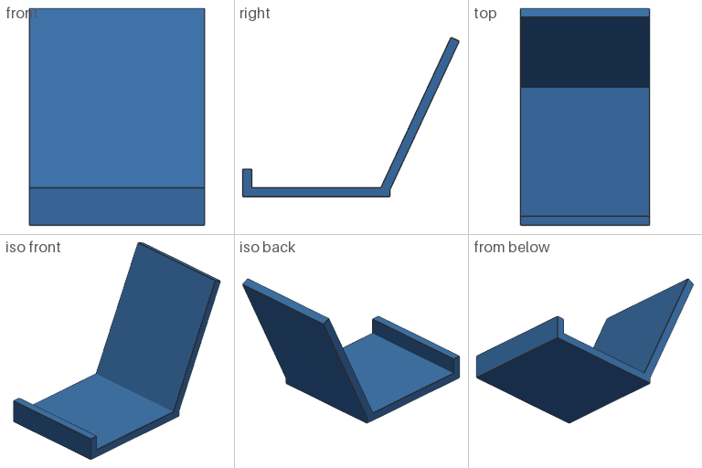
gemini-3.5-flash-lite/lib26-cdabac/rag/h02/rep0
A phone stand: a 70mm wide, 80mm deep, 5mm thick base plate; a 5mm thick, 90mm long back support leaning back at 65 degrees from the base; and a 10mm tall lip along the front edge to stop the phone sliding.
bench: best_effort, bbox wrong
llm:gemini-3.1-flash-lite v1: 0.89 pass
The base plate appears to be extended beyond the front lip (the lip is set back from the edge), whereas the request implies a standard base edge. However, the primary functional features are present.
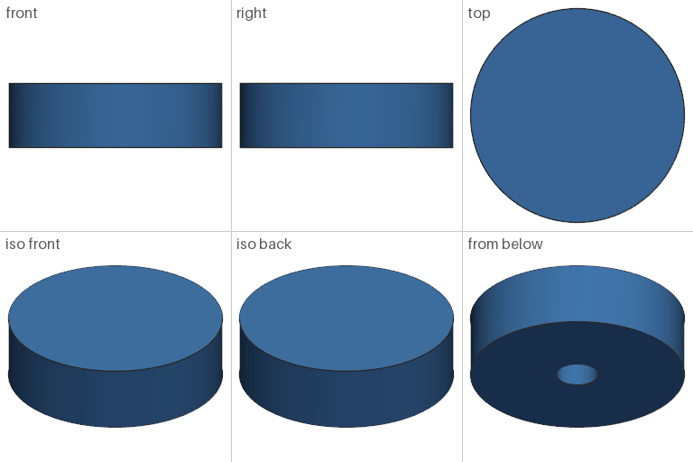
gemini-3.5-flash-lite/lib26-cdabac/rag/h04/rep0
A pulley wheel 40mm in diameter and 12mm wide with an 8mm bore and a V-groove around its rim, 6mm wide at the surface and 4mm deep.
bench: built, bbox ok
llm:gemini-3.1-flash-lite v1: 0.33 pass
missing V-groove around the rim
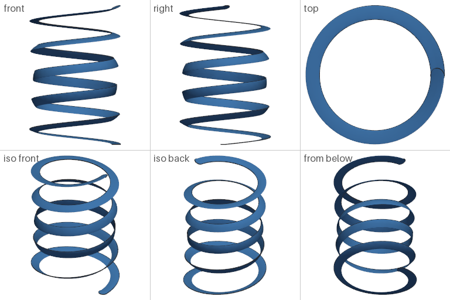
gemini-3.5-flash-lite/lib26-cdabac/rag/h05/rep0
A coil spring made from 2mm diameter round wire: 20mm outer diameter, 5 turns at a 6mm pitch.
bench: built, bbox wrong
llm:gemini-3.1-flash-lite v1: 0.33 pass
wire cross-section is flat/rectangular instead of round
pitch appears inconsistent with the specified 6mm (height is ~30mm for 5 turns, which matches, but the wire thickness dominates the gap)
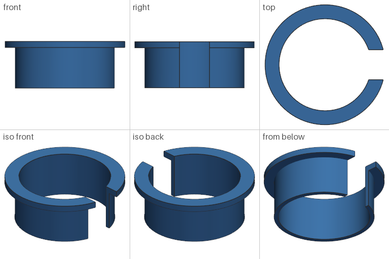
gemini-3.5-flash-lite/lib26-cdabac/rag/h06/rep0
A desk cable grommet: a 60mm diameter, 3mm thick round flange on top of a 50mm outer diameter, 20mm long tube with 2mm walls, open through the middle, with a 15mm wide slot cut through the flange and tube from one side to the centre so a cable can be slipped in.
bench: built, bbox ok
llm:gemini-3.1-flash-lite v1: 0.56 pass
The request specified the slot should be cut to the center (a 'C' shape), but the model features a very wide gap that removes a significant portion of the inner tube circumference, effectively making it a C-clip shape rather than a grommet with a cable insertion slot.
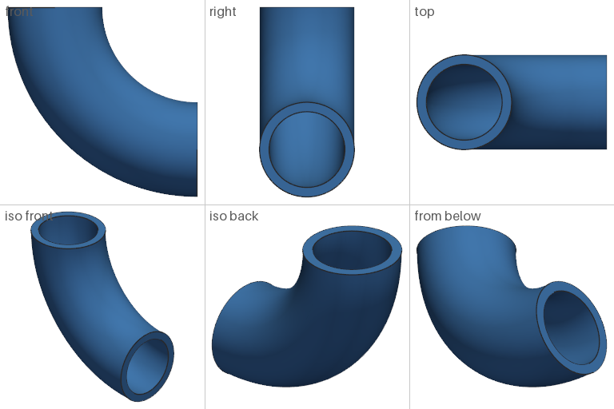
gemini-3.5-flash-lite/lib26-cdabac/rag/h07/rep0
A 90 degree pipe elbow: a tube with 20mm outer and 16mm inner diameter, bent through 90 degrees around a 30mm centreline radius, with no straight ends.
bench: built, bbox ok
llm:gemini-3.1-flash-lite v1: 0.56 pass
The centreline radius is incorrect; with an outer diameter of 20mm and a total footprint of ~40mm, the centreline radius is approximately 30mm (as requested), but the visual curvature suggests the bend is much tighter than the specified 30mm radius relative to the diameter
The measured footprint is ~40mm, which is consistent with the requested dimensions (30mm radius + 10mm radius on each side = 40mm overall), but the geometry is not correctly rendered as a pure bend without straight ends
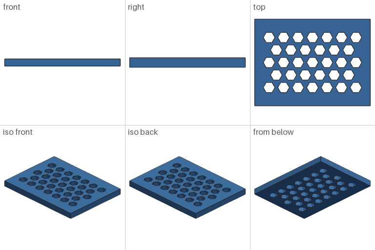
gemini-3.5-flash-lite/lib26-cdabac/rag/h08/rep0
An 80mm x 60mm x 5mm honeycomb panel: a grid of hexagonal through-holes 8mm across the flats with 2mm walls between them, leaving a solid border at least 3mm wide around the edge.
bench: built, bbox ok
llm:gemini-3.1-flash-lite v1: 0.44 pass
The 'from below' view shows a recessed pocket or hollowed underside, meaning the holes are not through-holes across the full 5mm thickness as requested. This structure creates a thin-walled shell rather than a solid honeycomb panel.
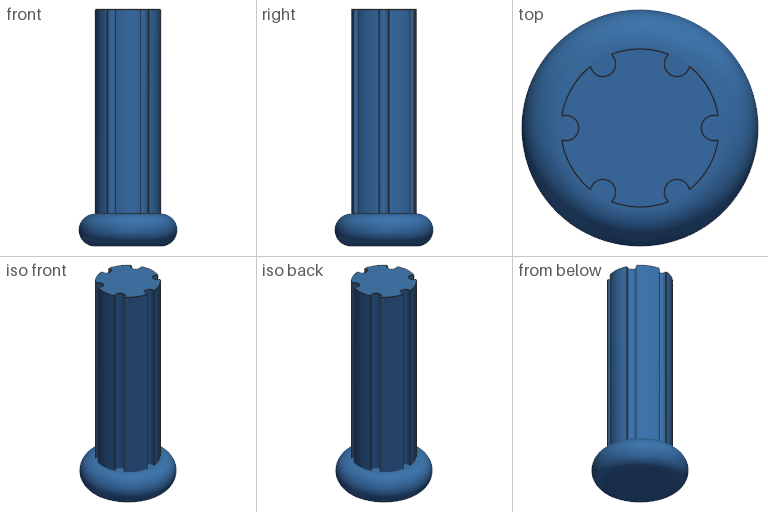
gemini-3.5-flash-lite/lib26-cdabac/rag/h09/rep0
A tool handle 25mm in diameter and 90mm long overall, with a fully rounded hemispherical back end and six 4mm diameter half-round flutes running along the straight part, evenly spaced around it.
bench: best_effort, bbox wrong
llm:gemini-3.1-flash-lite v1: 0.44 pass
diameter is ~37.5mm instead of the requested 25mm
the back end is a blunt rounded collar/flange rather than a fully rounded hemisphere
the end is not hemispherical and looks like an abrupt decorative cap
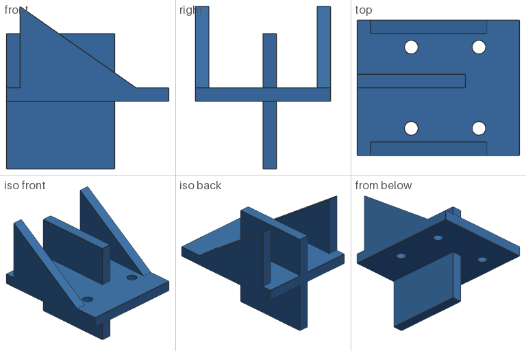
gemini-3.5-flash-lite/lib26-cdabac/rag/h10/rep0
An L-bracket 50mm wide with a 60mm long horizontal leg and a 40mm tall vertical leg, both 5mm thick, braced by two 5mm thick triangular gussets flush with the side edges, with two 5mm holes in each leg.
bench: best_effort, bbox wrong
llm:gemini-3.1-flash-lite v1: 0.33 pass
Features a third, central gusset that was not requested
Missing holes in the vertical leg
Gussets are not flush with the side edges; there are large overhangs on the sides
gemini-3.5-flash-lite/lib26-cdabac/rag/h11/rep0
A tapered square planter 70mm tall, 60mm square at the bottom and 80mm square at the top, with 3mm walls and base, open at the top, and a 10mm drainage hole in the centre of the base.
bench: built, bbox ok
llm:gemini-3.1-flash-lite v1: 1.00 pass
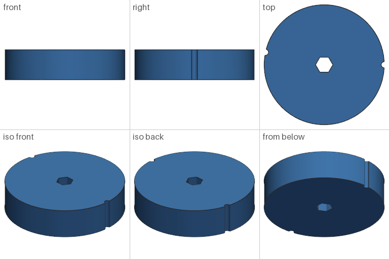
gemini-3.5-flash-lite/lib26-cdabac/rag/h12/rep0
A thumbwheel 40mm in diameter and 10mm thick with 30 semicircular 2mm diameter notches evenly spaced around its rim and a hexagonal socket 5mm across the flats through the centre.
bench: built, bbox ok
llm:gemini-3.1-flash-lite v1: 0.33 pass
only 3 semicircular notches are present instead of the requested 30
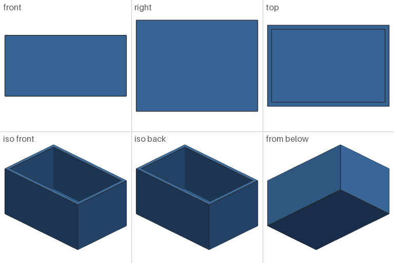
gemini-3.5-flash-lite/lib26-cdabac/rag/h13/rep0
An open-top box 60mm x 40mm x 30mm with 2mm walls and floor, with a 1.5mm tall, 1mm deep groove cut into the inside of both long walls, 3mm below the top edge, for a sliding lid.
bench: built, bbox ok
llm:gemini-3.1-flash-lite v1: 0.44 pass
the grooves do not appear to break through the front or back walls to allow for a sliding lid
gemini-3.5-flash-lite/lib26-cdabac/rag/m01/rep0
A 120mm x 80mm x 4mm mounting plate with a 3 by 2 grid of 5mm holes spaced 30mm apart, centred on the plate, and all four corners rounded with an 8mm radius.
bench: built, bbox ok
llm:gemini-3.1-flash-lite v1: 1.00 pass
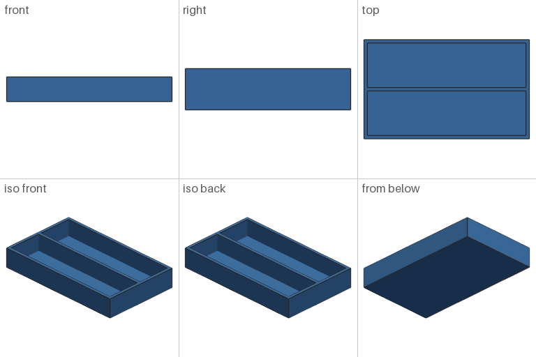
gemini-3.5-flash-lite/lib26-cdabac/rag/m02/rep0
An open-top rectangular tray 100mm x 60mm x 15mm with 2mm walls and a 2mm floor, with one 2mm divider wall splitting it into two equal compartments along its length.
bench: built, bbox ok
llm:gemini-3.1-flash-lite v1: 1.00 pass
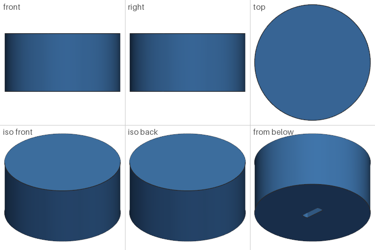
gemini-3.5-flash-lite/lib26-cdabac/rag/m03/rep0
A round knob 30mm in diameter and 15mm tall, with a 6mm D-shaped shaft hole 10mm deep in the bottom; the flat of the D is 1mm in from the circle.
bench: built, bbox ok
llm:gemini-3.1-flash-lite v1: 0.56 pass
The shaft hole shown in the 'from below' view is a simple rectangular slot, not a D-shaped hole as requested.
gemini-3.5-flash-lite/lib26-cdabac/rag/m04/rep0
A 60mm diameter disc, 5mm thick, with a 20mm centre hole and eight 4mm holes evenly spaced on a 45mm bolt circle.
bench: built, bbox ok
llm:gemini-3.1-flash-lite v1: 1.00 pass
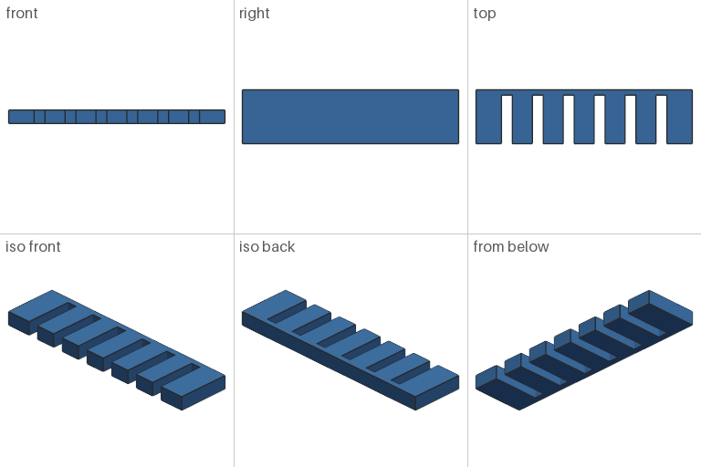
gemini-3.5-flash-lite/lib26-cdabac/rag/m05/rep0
A cable comb: an 80mm x 20mm x 5mm bar with six 4mm wide, 12mm deep slots cut into one long edge, evenly spaced along it.
bench: built, bbox ok
llm:gemini-3.1-flash-lite v1: 0.56 pass
The part has seven slots instead of the requested six.
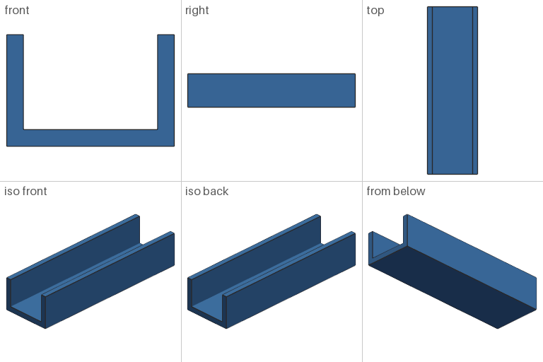
gemini-3.5-flash-lite/lib26-cdabac/rag/m06/rep0
A U-channel 100mm long, 30mm wide and 20mm tall, with 3mm thick walls and base, open at the top and both ends.
bench: built, bbox ok
llm:gemini-3.1-flash-lite v1: 1.00 pass
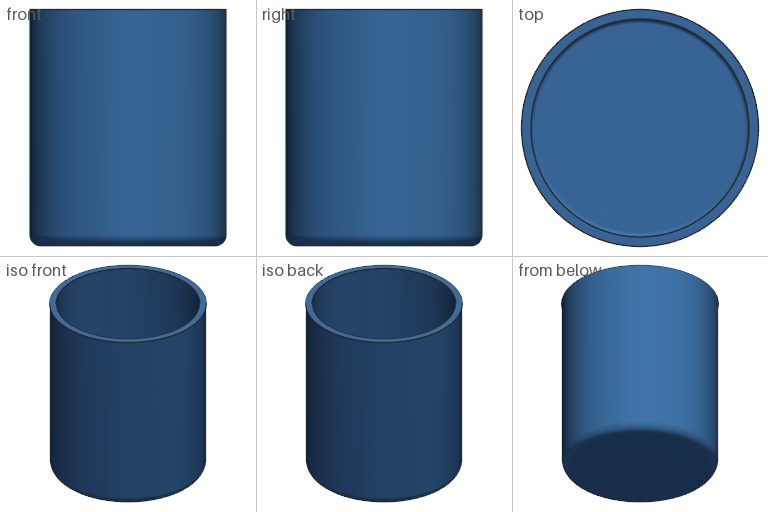
gemini-3.5-flash-lite/lib26-cdabac/rag/m07/rep0
A cylindrical cup 50mm outer diameter and 60mm tall with 2mm walls and a 2mm base, open at the top, with the outer bottom edge filleted with a 3mm radius.
bench: built, bbox ok
llm:gemini-3.1-flash-lite v1: 0.89 pass
The fillet on the outer bottom edge appears visually smaller than a 3mm radius would typically manifest on a 50mm diameter part, though it is present.
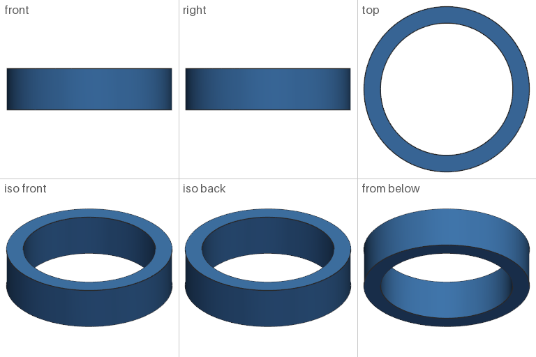
gemini-3.5-flash-lite/lib26-cdabac/rag/m08/rep0
A pipe clamp ring: 10mm tall, 32mm inner diameter, 4mm wall, with a 2mm wide gap cut through one side of the ring.
bench: built, bbox ok
llm:gemini-3.1-flash-lite v1: 0.33 pass
The required 2mm wide gap is missing; the ring is a solid continuous circle.
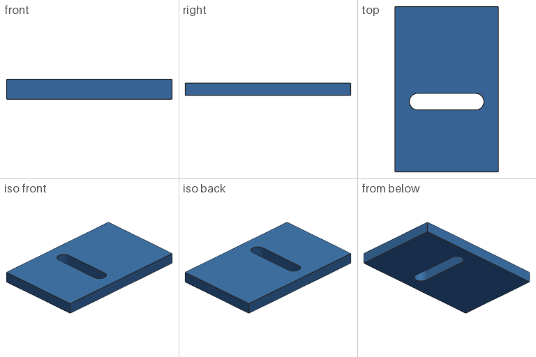
gemini-3.5-flash-lite/lib26-cdabac/rag/m11/rep0
A 25mm wide, 40mm tall, 3mm thick hanging plate with a keyhole cut through it: an 8mm diameter hole centred 12mm above the bottom edge, with a 4mm wide slot running 10mm straight up from the hole's centre.
bench: built, bbox ok
llm:gemini-3.1-flash-lite v1: 0.33 pass
The feature is a simple slot instead of the requested keyhole (a circular hole with a slot extending from it)
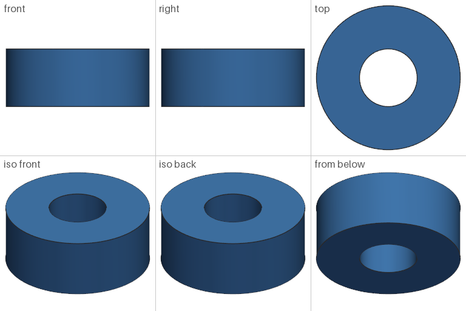
gemini-3.5-flash-lite/lib26-cdabac/rag/m12/rep0
A shaft collar: 25mm outer diameter, 10mm bore, 10mm long, with a 3.3mm radial hole drilled from the outside into the bore, centred along its length.
bench: built, bbox ok
llm:gemini-3.1-flash-lite v1: 0.44 pass
missing the requested 3.3mm radial hole
gemini-3.5-flash-lite/lib26-cdabac/rag/m13/rep0
A stepped shaft on one axis: 10mm diameter for the first 20mm, then 16mm diameter for 15mm, then 8mm diameter for the last 25mm.
bench: built, bbox ok
llm:gemini-3.1-flash-lite v1: 0.22 FAIL
the part is symmetrical with a central wide section and two equal-sized extensions, rather than three distinct sequential steps as requested
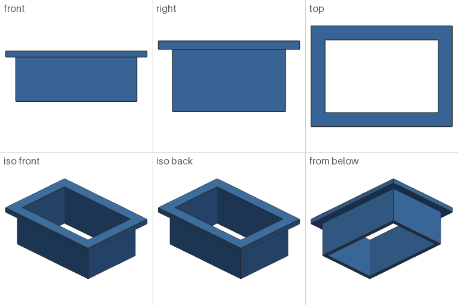
gemini-3.5-flash-lite/lib26-cdabac/rag/m14/rep0
An open-top box 60mm x 40mm x 25mm with 2mm walls and floor, with a 3mm thick flange sticking out 5mm all around the outside of the top rim, flush with the top.
bench: built, bbox ok
llm:gemini-3.1-flash-lite v1: 0.56 pass
The request specified an open-top box with a floor, but the provided model appears to have no floor (it is a hollow frame/tube shape).
gemini-3.5-flash-lite/lib26-cdabac/rag/m15/rep0
A bolt blank: a hexagonal head 13mm across the flats and 5mm tall, with a plain 8mm diameter shank 30mm long (no thread).
bench: built, bbox ok
llm:gemini-3.1-flash-lite v1: 1.00 pass
The total height is 35mm (requested 35mm), but if the head is 5mm, the shank is 30mm, which matches the length requirement. The measured size 15.0111 x 13 x 35mm confirms the head width and length are correct.
gemini-3.5-flash-lite/lib26-cdabac/rag/m16/rep0
A five-pointed star 6mm thick: the points lie on a 30mm radius circle and the inner corners on a 12mm radius circle.
bench: built, bbox ok
llm:gemini-3.1-flash-lite v1: 1.00 pass
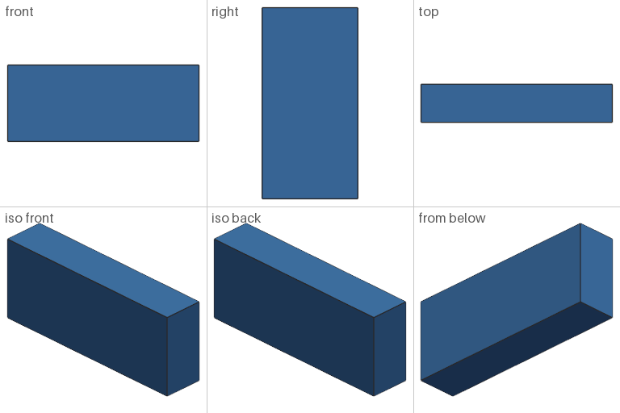
gemini-3.5-flash-lite/lib26-cdabac/rag/m17/rep0
A 100mm long, 20mm deep, 40mm tall block with a 60mm diameter semicircular arch cut through it from front to back, centred on the bottom edge.
bench: built, bbox ok
llm:gemini-3.1-flash-lite v1: 0.11 FAIL
missing the required 60mm diameter semicircular arch cut through the block
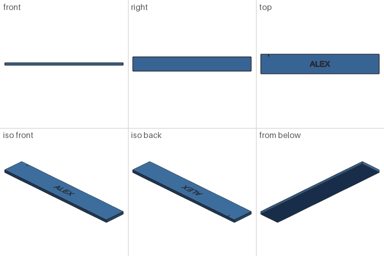
gemini-3.5-flash-lite/lib26-cdabac/rag/p01/rep0
Make me a ruler with my name engraved on it. The ruler is 150mm long, 25mm wide and 3mm thick, with the name ALEX engraved 0.5mm deep and a tick mark every 10mm along one long edge.
bench: built, bbox ok
llm:gemini-3.1-flash-lite v1: 0.44 pass
only a single tick mark is present instead of a full scale with marks every 10mm
gemini-3.5-flash-lite/lib26-cdabac/rag/p06/rep0
A chess rook 40mm tall and 25mm across at its widest point (the base), with a castle top that has four notches cut into its rim.
bench: built, bbox ok
llm:gemini-3.1-flash-lite v1: 1.00 pass
gemini-3.5-flash-lite/lib26-cdabac/rag/s01/rep0
A cylindrical spacer with 12mm outer diameter, 6.5mm inner diameter, 15mm long.
bench: built, bbox ok
llm:gemini-3.1-flash-lite v1: 1.00 pass
gemini-3.5-flash-lite/lib26-cdabac/rag/s02/rep0
A 25mm cube with a 10mm diameter hole drilled through the centre from top to bottom.
bench: built, bbox ok
llm:gemini-3.1-flash-lite v1: 1.00 pass
gemini-3.5-flash-lite/lib26-cdabac/rag/s03/rep0
A hexagonal prism 30mm across the flats and 8mm tall.
bench: built, bbox ok
llm:gemini-3.1-flash-lite v1: 1.00 pass
gemini-3.5-flash-lite/lib26-cdabac/rag/s04/rep0
A 70mm x 20mm x 4mm bar with a 40mm long, 6mm wide slot through it, centred along its length.
bench: built, bbox ok
llm:gemini-3.1-flash-lite v1: 1.00 pass
gemini-3.5-flash-lite/lib26-cdabac/rag/s05/rep0
A solid cone 40mm in base diameter and 30mm tall.
bench: built, bbox ok
llm:gemini-3.1-flash-lite v1: 1.00 pass
Reference solutions (calibration) (22)
references/c01
Can you make me something to stand my AA batteries up in? 8 of them in two rows of four, holes 15mm wide and 20mm deep, in an 80 x 40 x 25 block.
reference solution
llm:gemini-3.1-flash-lite v1: 0.56 pass
The 'from below' view reveals that the underside is completely hollow rather than having solid 20mm deep holes as requested.
Overall dimensions are incorrect (20x20x32mm instead of 40x10mm).
All requested features (notches, hexagonal socket) are missing.
references/h06
A desk cable grommet: a 60mm diameter, 3mm thick round flange on top of a 50mm outer diameter, 20mm long tube with 2mm walls, open through the middle, with a 15mm wide slot cut through the flange and tube from one side to the centre so a cable can be slipped in.
reference solution
llm:gemini-3.1-flash-lite v1: 0.78 pass
The slot width appears significantly wider than the requested 15mm relative to the 60mm diameter (it appears to be closer to 20-25mm wide).
The object is a circular/cylindrical part, not a box.
The overall dimensions (approx 60x60x23mm) do not match the requested 60x40x30mm.
The part lacks the requested internal grooves.
The shape is entirely different from the requested rectangular box.
references/h07
A 90 degree pipe elbow: a tube with 20mm outer and 16mm inner diameter, bent through 90 degrees around a 30mm centreline radius, with no straight ends.
reference solution
llm:gemini-3.1-flash-lite v1: 0.44 pass
The elbow is not a continuous bend; the 'from below' view shows a clear twist or deformation in the geometry of the tube wall, making it a non-functional pipe elbow.
The overall size is 40 x 40, but for a 30mm centreline radius with a 20mm outer diameter, the footprint should be 40mm (30 + 10) x 40mm (30 + 10), which matches the measured size, but the visible geometric distortion is a major defect.
The object is a curved pipe section, not a square plate.
The overall dimensions are completely incorrect.
All requested features (square plate, square pocket, dimensions) are missing.
references/h08
An 80mm x 60mm x 5mm honeycomb panel: a grid of hexagonal through-holes 8mm across the flats with 2mm walls between them, leaving a solid border at least 3mm wide around the edge.
reference solution
llm:gemini-3.1-flash-lite v1: 0.33 pass
the 'from below' view reveals that the holes are not actual through-holes; they are recessed pockets or indentations, leaving a solid bottom surface instead of a hollow honeycomb mesh
The object is a flat rectangular plate with a honeycomb pattern, not a cylindrical pin.
Overall dimensions are incorrect.
None of the requested features (pin shape, chamfers, groove) are present.
references/h09
A tool handle 25mm in diameter and 90mm long overall, with a fully rounded hemispherical back end and six 4mm diameter half-round flutes running along the straight part, evenly spaced around it.
reference solution
llm:gemini-3.1-flash-lite v1: 0.67 pass
The model features 8 flutes instead of the requested 6.
The generated object is a cylindrical/bullet-shaped part, not a flat rectangular hanging plate.
The requested keyhole feature is completely missing.
The dimensions (specifically height and thickness) do not match the request.
references/h10
An L-bracket 50mm wide with a 60mm long horizontal leg and a 40mm tall vertical leg, both 5mm thick, braced by two 5mm thick triangular gussets flush with the side edges, with two 5mm holes in each leg.
The part is a gusseted L-bracket, not a shaft collar.
Missing central bore.
Missing cylindrical shape.
Missing radial hole.
Overall dimensions do not match a 25mm diameter shaft collar.
references/h11
A tapered square planter 70mm tall, 60mm square at the bottom and 80mm square at the top, with 3mm walls and base, open at the top, and a 10mm drainage hole in the centre of the base.
The object is a hollow tapered container, not a stepped shaft.
None of the requested features (cylindrical steps of varying diameters) are present.
references/h12
A thumbwheel 40mm in diameter and 10mm thick with 30 semicircular 2mm diameter notches evenly spaced around its rim and a hexagonal socket 5mm across the flats through the centre.
reference solution
llm:gemini-3.1-flash-lite v1: 0.78 pass
The part has 40 notches instead of the requested 30.
The object is a circular gear-like disc, not an open-top box.
The dimensions (approx 40mm diameter) do not match the requested 60mm x 40mm x 25mm.
The requested flange and box features are completely missing.
Extra features include a central hexagonal hole and external gear teeth.
references/h13
An open-top box 60mm x 40mm x 30mm with 2mm walls and floor, with a 1.5mm tall, 1mm deep groove cut into the inside of both long walls, 3mm below the top edge, for a sliding lid.
reference solution
llm:gemini-3.1-flash-lite v1: 0.56 pass
The grooves on the long walls appear to be continuous/closed at the ends rather than open to allow a sliding lid to enter or exit, effectively making them a recessed ledge rather than a functional slot for a sliding lid.
The part is a hollow rectangular box, not a bolt blank.
The shape is completely wrong.
The dimensions do not match the requested specifications.
references/m09
A 50mm x 50mm x 6mm plate with a 30mm square pocket, 3mm deep, centred in the top face; the pocket's four inside corners are rounded with a 4mm radius.
The object is a cylinder with a groove, not a block with an arch cut.
The overall length is completely incorrect (100mm requested vs ~20mm measured).
All requested features (block shape, 60mm semicircular arch) are missing.
references/m11
A 25mm wide, 40mm tall, 3mm thick hanging plate with a keyhole cut through it: an 8mm diameter hole centred 12mm above the bottom edge, with a 4mm wide slot running 10mm straight up from the hole's centre.
reference solution
llm:gemini-3.1-flash-lite v1: 0.56 pass
The keyhole is oriented incorrectly: the request specifies the slot should run upwards from the hole (towards the top edge), but the slot on the part runs towards the bottom edge.
the overall dimensions (16x16x60mm) do not match the requested 20mm diameter and 40mm length
the part features an extra protrusion/stepped cylinder instead of a groove
the requested chamfers on the end edges are missing
references/m14
An open-top box 60mm x 40mm x 25mm with 2mm walls and floor, with a 3mm thick flange sticking out 5mm all around the outside of the top rim, flush with the top.
overall dimensions are incorrect (70x50x25mm provided instead of 60x40x30mm)
internal grooves for sliding lid are completely missing from the interior walls
references/m15
A bolt blank: a hexagonal head 13mm across the flats and 5mm tall, with a plain 8mm diameter shank 30mm long (no thread).
reference solution
llm:gemini-3.1-flash-lite v1: 0.78 pass
The total length is 35mm (5mm head + 30mm shank), but the provided measurement of 15.01 x 13 x 35 mm indicates the head height may be significantly larger than the requested 5mm (15.01mm total height vs 35mm total length).
The part is a star shape instead of a round grommet.
The flange, tube, and slot features are completely missing.
The overall dimensions do not match the requested specifications.
references/m17
A 100mm long, 20mm deep, 40mm tall block with a 60mm diameter semicircular arch cut through it from front to back, centred on the bottom edge.
reference solution
llm:gemini-3.1-flash-lite v1: 0.56 pass
The arch height is too large for the block. With a 60mm diameter (30mm radius) and a 40mm total height, the arch should stop 10mm from the top edge. In the image, the arch reaches the top edge, making it a 80mm diameter cut (40mm radius) for the requested 40mm height block.